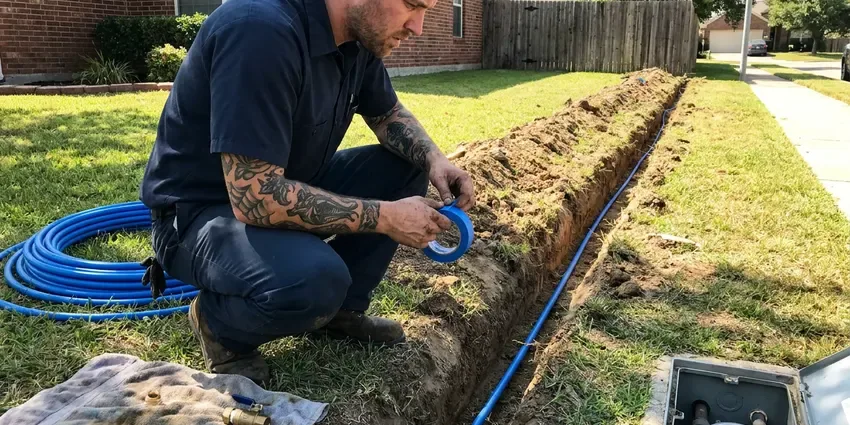

Pipe Replacement in Beaverton, OR
Stop worrying about leaks and low water pressure in your Beaverton, OR home with professional pipe replacement from JFL Plumbing. We upgrade your plumbing for lasting peace of mind.
- Quality Materials
- Licensed & Insured
- Permits and Inspections Handled
- Fast Repipe Scheduling

Need New Pipes? Call the Experts in Beaverton, OR.
Upgrade your plumbing system with JFL Plumbing and enjoy dependable water flow and fewer worries about leaks.
Reliable Home Pipe Replacement in Beaverton, OR
JFL Plumbing plans each repipe so most new lines run through the attic and drop down inside walls, which keeps openings small. We pressure test the new system before any drywall is patched and schedule the city inspection.
Our expertise includes:
- Galvanized, polybutylene and pinhole-leak copper replacement
- Whole-home repiping with PEX or copper
- Cast iron and failing ABS drain line replacement

Additional Plumbing Replacement Services in Beaverton, OR
When repairs are no longer enough, our replacement services in Beaverton, OR deliver durable upgrades that restore full performance.




Beaverton water line replacement specialists

Customers
Why Choose JFL Plumbing for Pipe Replacement in Beaverton, OR?
Our expertise in Beaverton, OR plumbing ensures your pipe replacement is handled smoothly and correctly the first time. We use only proven, code-compliant materials for every project.
- Expert Diagnosis, Our team uses modern tools to pinpoint the exact location and cause of your pipe issues, avoiding unnecessary work.
- Local Expertise, JFL Plumbing understands the specific plumbing codes and challenges in Beaverton, OR, ensuring your pipe replacement meets all local requirements.
- Clean Jobsites, We protect floors and furniture and leave the house clean at the end of every day.
Citywide Coverage
JFL Plumbing serves every neighborhood and suburb within Beaverton for all your pipe replacement needs. Whether you're in an older part of town with galvanized pipes or a newer development, our local teams are ready to respond.
Experienced Team
Our team of licensed plumbers brings deep experience to every pipe replacement project. They are regularly trained on the latest techniques and materials to ensure your plumbing upgrade is performed to the highest standards.
Safety-First Approach
We ensure every pipe replacement is completed according to strict industry standards and local Beaverton, OR building codes, delivering a safe and compliant plumbing system.
Trusted Certified Beaverton Plumbing Services Professionals
At JFL Plumbing, we take pride in providing licensed, certified plumbing services throughout Beaverton, OR. Backed by recognized industry credentials, our experienced plumbers combine technical skill with genuine customer care. Whether it is repair, installation, or maintenance, we follow strict safety and quality standards to deliver long-lasting results you can trust.
Call Us Now PHCC Plumbing Contractor Recognition
PHCC Plumbing Contractor Recognition Better Business Bureau (BBB) Accreditation
Better Business Bureau (BBB) Accreditation Angi Certified Pro
Angi Certified Pro ISO 9001 Quality Management Certification
ISO 9001 Quality Management CertificationDurable Pipe Replacement Services in Beaverton, OR
PEX Repiping in Beaverton
PEX-A is flexible, resists scale buildup and expands slightly if water freezes, which helps in colder homes. We use expansion fittings that keep the full inside diameter of the pipe for better flow. Systems can be run as a home-run manifold with a shutoff for each fixture or as a trunk and branch layout. PEX installs faster than copper with many fewer fittings in the walls. It is our most requested repipe material.

Corroded Pipe Replacement in Beaverton, OR
Many older homes in Beaverton, OR still have galvanized steel pipes, which are prone to internal corrosion over time. This corrosion restricts water flow, reduces water pressure, and can introduce rust particles into your drinking water. Our pipe replacement service targets these corroded sections, replacing them with new, non-corrosive materials like PEX or copper. This restores proper water flow and ensures clean, clear water throughout your home.
Copper Pinhole Leak Replacement in Beaverton, OR
Pinhole leaks in copper usually start as a small green stain or a damp spot on drywall. They are caused by a mix of water chemistry, high velocity and thin Type M pipe, and once they begin they tend to keep appearing. Patching each leak costs $300 to $800 per visit plus drywall repair. We can replace the affected branch or repipe the home with PEX, which does not develop pinholes. We help you weigh the cost of both paths.
Slab Leak Pipe Replacement in Beaverton
Slab leaks, common in homes built on concrete foundations, can be destructive and difficult to detect. These leaks often stem from corroded or damaged pipes embedded within or under your home's slab. JFL Plumbing uses modern leak detection technology to locate the exact source, then expertly repairs or reroutes the compromised pipe, often using durable PEX to bypass the slab entirely, avoiding future issues in the same spot.
Commercial Pipe Replacement in Beaverton
Beyond residential services, JFL Plumbing also provides commercial pipe replacement for businesses and properties in Beaverton. Commercial plumbing systems often face higher demands and require specialized knowledge. Whether it's replacing supply lines in an office building, drainage pipes in a restaurant, or addressing complex industrial piping, our experienced commercial plumbers ensure limited downtime and durable solutions tailored to your business needs.
PEX Pipe Installation in Beaverton
PEX (cross-linked polyethylene) piping is a common choice for modern pipe replacement projects in Beaverton due to its flexibility, durability, and resistance to corrosion and freezing. It's also less expensive to install than copper. Many rural homes rely on private wells, and owners around Beaverton benefit from testing for iron, hardness and other typical concerns. JFL Plumbing expertly installs PEX piping for full home repipes or targeted section replacements, providing a reliable and long-lasting plumbing solution that handles local water conditions well.
Whole-Home Repiping in Beaverton
If your home in Beaverton is older and experiencing frequent leaks, low water pressure throughout, or discolored water from multiple fixtures, a whole-home repiping might be the most cost-effective long-term solution. We can replace all the old galvanized steel or polybutylene pipes with modern, durable PEX or copper piping. This upgrades your entire water delivery system, greatly improving water quality and pressure while eliminating future leak concerns from aging infrastructure.

Whole-Home Re-Piping in Beaverton
For homes with widespread pipe issues like frequent leaks, discolored water, or low water pressure, a full-home re-piping might be the best solution. We thoroughly assess your existing system, often finding old galvanized steel or polybutylene pipes that are past their lifespan. Our team provides efficient replacement with modern, durable materials like PEX or copper, significantly upgrading your entire plumbing infrastructure. This complete service in Beaverton ensures consistent water flow and eliminates future pipe-related headaches.
Pipe Replacement Near Me in Beaverton, OR
A nearby team also means faster response if a leak shows up before your scheduled repipe. We can patch the urgent problem and fold it into the larger project. Call us for a straightforward, written estimate.
Choosing a local company like JFL Plumbing for your pipe replacement means you get personal service from plumbers who know the local infrastructure and regulations in Beaverton, OR. We are committed to serving our community with honest advice and high-quality workmanship, ensuring your plumbing system is sturdy and reliable for years to come.
JFL Plumbing at a Glance
- Licensed and insured plumbers serving Beaverton, OR
- 24/7 emergency service with same-day scheduling
- Clear written estimates, no hidden fees
- 4.8-star rated by 657+ Oregon customers
Beaverton Map
Beaverton Information
- Population
- 96,945
- Area codes
- 503/971/509
- Service area
- Beaverton and communities within 40 miles
- Nearby
- Aloha, Tigard, Bethany, Hillsboro
Slab foundations, hard water and aging galvanized, polybutylene and thin copper lines make planned pipe replacement a sensible upgrade for homes in Beaverton, OR.
Expert Services
Trust our professionals for reliable JFL Plumbing solutions in Beaverton, OR.
Our Specialized Plumbing Services in Beaverton, OR
At JFL Plumbing, we provide a complete range of plumbing services across Beaverton, OR. From leak detection to full system installations, our team ensures fast, precise, and affordable service for both residential and commercial properties. Explore our core services below:


How Our Pipe Replacement Process Works in Beaverton, OR
We follow a proven, step-by-step approach to ensure your pipe replacement is handled professionally from start to finish.
Request a Quote
Call (971) 333-7694 and tell us about leaks, pressure or water color problems. We schedule an on-site inspection.
Inspect and Plan
We identify your pipe materials and map routes through the attic and walls. You get a written quote with materials, timeline and patching plan.
Replace and Test
We install the new lines, pressure test the system and pass inspection. Then we patch openings and tidy up.
Frequently Asked Questions About Pipe Replacement in Beaverton
A whole-home PEX repipe for a typical single-story home usually costs $5,000 to $12,000, while copper repipes and larger homes can run $10,000 to $18,000. Replacing a single section or branch line often costs $500 to $3,000. We give a written price after inspection.
While minor repairs might be attempted by experienced DIY enthusiasts, full pipe replacement is a complex job that should be left to licensed professionals. Incorrect installation can lead to expensive leaks, water damage, and code violations. Our Beaverton plumbers have the tools, training, and experience to do the job right.
Most cities require a permit for a whole-home repipe. We pull the permit and schedule inspections as part of the job.
Common signs include frequent leaks, low water pressure, discolored or rusty water, banging noises in your pipes, and a sudden increase in your water bill without explanation. If your home has galvanized steel or polybutylene pipes and is over 40 years old, it's a good idea to have them inspected.
We use well-known, high-quality brands for all our pipe replacement projects. For PEX, we often use products from Uponor (Wirsbo) or Viega, known for their reliability. For copper, we source from reputable manufacturers like Mueller Streamline. Our fittings are always top-grade brass or approved PEX crimp or expansion fittings to ensure tight connections in your Beaverton home.
Yes, for significant pipe replacement projects, especially whole-home repipes or changes to the main water or sewer lines, permits are typically required by local building codes. JFL Plumbing handles all necessary permits and inspections to ensure your project complies with local regulations.
Yes, JFL Plumbing understands that pipe replacement can be a major investment. We offer various financing options to help make your plumbing upgrades more affordable and manageable. Please speak with our team for more details on available plans that fit your budget.
Most repipes take two to four days, depending on home size and access. We restore water each evening so you can stay at the home.
What People Are Saying About Our Plumbing Experts?

James P.
Our commercial plumbing system had a leak under the sink, and JFL Plumbing handled it professionally. The plumbers arrived quickly and restored everything without disruption to our customers.
Commercial Plumbing · Beaverton, OR
Emily R.
I called JFL Plumbing for plumbing repair, and the technician was fast, polite, and thorough. They explained the problem clearly and fixed it the same day. I will definitely hire them again. Highly recommended!
Plumbing Repair · Beaverton, OR
Mark T.
When our office needed drain cleaning, JFL Plumbing provided quick, reliable service. The plumber arrived on time and made sure every drain flowed perfectly before leaving. Very satisfied.
Drain Cleaning · Beaverton, OR
Daniel K.
A pipe burst at 11 pm and they actually answered. The plumber showed up within the hour, shut everything down, and had us back to normal the next morning. Could not ask for more.
Emergency Plumbing · Hillsboro, ORRobert G.
The trenchless sewer replacement saved our front yard. They walked us through the camera inspection footage first so we knew exactly what we were paying for.
Sewer Line Replacement · Tigard, OR
Sofia M.
Two new toilets installed in one visit, no mess left behind, and the tech even adjusted a faucet he noticed was dripping. Fair pricing and really friendly.
Toilet Installation · Tigard, OR